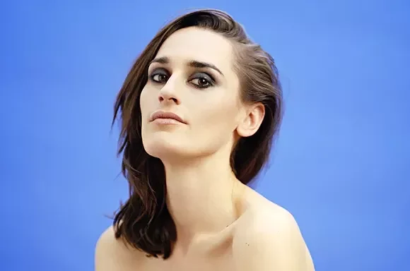
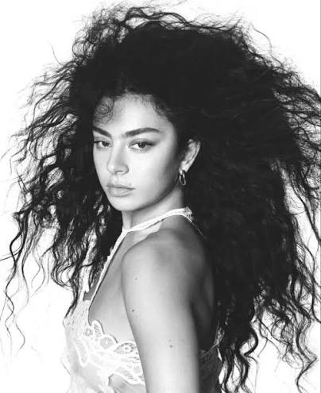

XG (Xtraordinary Genes)
XG is a japanese group
Artists and groups I just can't get enough of

XG is a japanese group

There is a lot of text here, I think this text is needed because the contents don't use up enough space if the paragraph doesn't claim it.

Orla Gartland is a great artist from Ireland. I absolutely love her and I've been a part of her Secret Demo Club for a couple of years now!

Agnes Carlsson is a sweedish

It's been over 12 years since I discovered Yelle through a recommendation on a Sup3rfruit video... That takes me back! She's the queen of French electropop for me
Chill or lo-fi music, because I do vibe a lot with that.
Girly pop.

Carly

I discovered Charli through "Selfish Girl", a track from the deluxe edition of CRASH and I really got into the vibe of that album. Later I didn't like brat at first but with the years I've learnt to love it